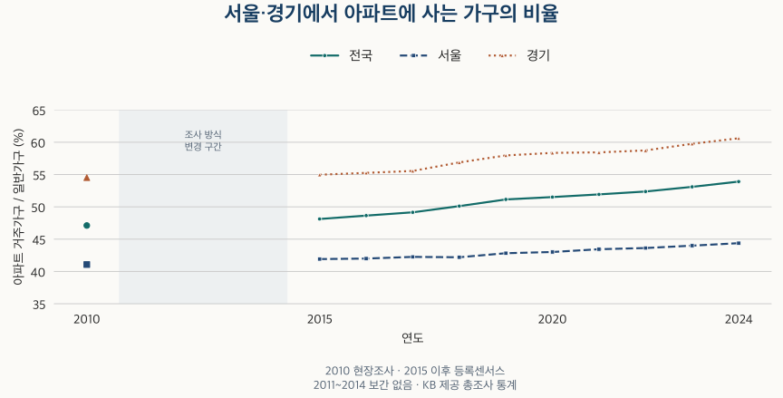

이사와 인구 · 아파트 거주가구
서울·경기 가구는 얼마나 아파트에 살까? 2010년과 2024년
서울·경기 아파트 거주가구 비율을 2010년과 2015~2024년으로 비교합니다. 서울 25구·경기 20시의 분모 변화, 같은 기간 입주 물량과 소유·거주의 차이를 확인합니다.
분석 기간 · 2010·2015~2024년 | 자료 기준일 · 2026-10-04
아파트가 많이 보이는 동네라고 해서 대부분의 가구가 아파트에 사는 것은 아닙니다. 2024년 일반가구 중 아파트에 사는 비율은 서울 44.38%, 경기 60.61%였습니다. 두 지역 모두 2010년보다 높아졌지만, 모든 시·구가 같은 방향으로 움직이지는 않았습니다. 아파트 거주가구가 늘면서도 비율이 낮아진 곳도 있습니다.
‘아파트에 사는 비율’의 분모는 일반가구입니다
계산은 아파트 거주 일반가구 ÷ 일반가구 × 100입니다. 함께 생활하는 가족 가구와 1인 가구 등이 분모에 들어갑니다. 총가구에는 집단가구·외국인가구라는 별도 분류도 포함되므로 총가구를 분모로 넣으면 다른 비율이 됩니다. 아파트 거주가구에는 자가와 임차가구가 함께 포함됩니다.
| 지역 | 아파트 거주가구 | 일반가구 | 아파트 거주 비율 |
|---|---|---|---|
| 전국 | 12,018,912 | 22,294,419 | 53.91 |
| 서울 | 1,845,921 | 4,159,502 | 44.38 |
| 경기 | 3,389,648 | 5,592,072 | 60.62 |
2024 인구주택총조사 표 31(본문 49쪽)은 천 가구와 소수 첫째 자리로 이 수치를 제시합니다. 위 표는 KB 데이터허브가 제공하는 가구 통계의 가구 단위 값을 같은 분모로 계산해 소수 둘째 자리까지 표시했습니다. 기준 시점은 2024년 11월 1일 0시입니다.
‘아파트가 주택의 몇 퍼센트인가’와도 구분해야 합니다. 그 질문의 분모는 주택 수이고 단위는 호입니다. 이 글은 주택에 사는 생활 단위인 가구를 세므로, 빈집을 포함한 아파트 재고를 분자에 넣지 않습니다. 인구·세대·가구의 차이를 먼저 확인하면 네 숫자를 섞는 실수를 줄일 수 있습니다.
서울은 41.07%에서 44.38%, 경기는 54.52%에서 60.61%로
2010년과 2024년 공표값의 차이는 서울 +3.31%포인트, 경기 +6.09%포인트입니다. 다만 2010년은 현장조사, 2015년 이후는 행정자료를 활용한 등록센서스입니다. 공식 보고서도 일부 개념이 일치하지 않을 수 있다고 설명합니다. 이 차이를 전부 실제 주거 선택의 변화로 해석해서는 안 됩니다.

| 연도 | 전국 | 서울 | 경기 |
|---|---|---|---|
| 2010 | 47.11 | 41.07 | 54.52 |
| 2015 | 48.12 | 41.92 | 54.97 |
| 2016 | 48.65 | 42.00 | 55.26 |
| 2017 | 49.15 | 42.26 | 55.56 |
| 2018 | 50.12 | 42.20 | 56.88 |
| 2019 | 51.15 | 42.83 | 57.96 |
| 2020 | 51.52 | 43.01 | 58.35 |
| 2021 | 51.93 | 43.44 | 58.43 |
| 2022 | 52.37 | 43.63 | 58.73 |
| 2023 | 53.10 | 44.00 | 59.76 |
| 2024 | 53.91 | 44.38 | 60.62 |
같은 등록센서스 방식인 2015~2024년만 보아도 서울은 41.92%에서 44.38%, 경기는 54.97%에서 60.61%로 높아졌습니다. 전국 역시 48.12%에서 53.91%로 올랐습니다. 하지만 광역 평균은 그 안의 모든 동네를 대표하지 않습니다.
비율이 가장 많이 오른 곳도, 내려간 곳도 있습니다
서울 25구 중 2010→2024 비율 상승 폭이 가장 큰 곳은 은평구(+12.62%포인트)였습니다. 서대문구(+11.22), 성동구(+10.65)가 뒤를 이었습니다. 반대로 도봉구는 52.59%에서 49.06%로 낮아졌고, 강서구와 노원구도 하락했습니다. 변화 폭의 순서이며 2024년 비율 자체의 순위는 아닙니다.
수집된 경기 20시에서는 하남시(+16.00%포인트), 광명시(+14.68), 의왕시(+11.79)의 상승 폭이 컸습니다. 용인시(-4.82), 광주시(-3.49), 군포시(-1.01)는 2010년보다 낮았습니다. 이 비교는 경기도 전체 31개 시·군 순위가 아닙니다. 아래 표에 비교한 20시를 모두 제시하며, 수원시와 수원시의 하위 구를 함께 넣어 중복 계산하지 않았습니다.
| 지역 | 아파트 2010 | 아파트 2024 | 일반 2010 | 일반 2024 |
|---|---|---|---|---|
| 은평구 | 35,508 | 70,686 | 154,923 | 198,916 |
| 도봉구 | 62,554 | 63,703 | 118,947 | 129,841 |
| 하남시 | 23,820 | 89,023 | 46,100 | 131,561 |
| 용인시 | 198,259 | 284,159 | 269,746 | 413,755 |
용인시를 보면 비율 하락의 뜻이 선명해집니다. 아파트 거주가구는 198,259가구에서 284,159가구로 늘었습니다. 그런데 일반가구는 269,746가구에서 413,755가구로 더 빠르게 늘어, 아파트 비율은 73.50%에서 68.68%로 내려갔습니다. ‘비율 하락’을 ‘아파트 거주가구 감소’라고 읽을 수 없는 사례입니다. 도봉구도 아파트 거주가구 수는 소폭 늘었습니다.
비교 시작점도 중요합니다. 광주시의 비율은 2010년 40.80%, 2015년 30.05%, 2024년 37.31%입니다. 2010년과 비교하면 낮지만 2015년과 비교하면 높습니다. 조사 방식 변화가 있는 장기 차이와 2015년 이후의 변화를 나란히 확인해야 합니다. 각 연도의 행정구역 기준이므로 경계 변경까지 제거한 같은 면적의 비교는 아닙니다.
서울 25구 전체 비교표 보기
| 지역 | 2010 | 2015 | 2024 | 2010→2024 | 2015→2024 |
|---|---|---|---|---|---|
| 종로구 | 18.34 | 19.84 | 23.74 | +5.39 | +3.89 |
| 중구 | 37.06 | 41.93 | 44.34 | +7.28 | +2.41 |
| 용산구 | 32.10 | 34.47 | 38.72 | +6.62 | +4.25 |
| 성동구 | 43.39 | 48.53 | 54.04 | +10.65 | +5.51 |
| 광진구 | 20.95 | 20.04 | 21.86 | +0.90 | +1.82 |
| 동대문구 | 35.97 | 38.29 | 43.58 | +7.61 | +5.29 |
| 중랑구 | 29.85 | 31.29 | 34.19 | +4.34 | +2.90 |
| 성북구 | 38.47 | 39.63 | 44.85 | +6.38 | +5.22 |
| 강북구 | 25.32 | 25.59 | 27.65 | +2.33 | +2.06 |
| 도봉구 | 52.59 | 50.60 | 49.06 | -3.53 | -1.53 |
| 노원구 | 79.71 | 76.80 | 78.36 | -1.35 | +1.57 |
| 은평구 | 22.92 | 27.72 | 35.54 | +12.62 | +7.82 |
| 서대문구 | 30.89 | 33.05 | 42.11 | +11.22 | +9.06 |
| 마포구 | 35.46 | 39.54 | 44.38 | +8.91 | +4.83 |
| 양천구 | 50.29 | 50.54 | 53.66 | +3.37 | +3.12 |
| 강서구 | 47.21 | 48.01 | 44.87 | -2.34 | -3.13 |
| 구로구 | 43.71 | 46.63 | 48.20 | +4.48 | +1.56 |
| 금천구 | 28.19 | 29.02 | 28.72 | +0.53 | -0.30 |
| 영등포구 | 42.37 | 42.87 | 44.77 | +2.39 | +1.89 |
| 동작구 | 32.87 | 35.16 | 39.41 | +6.54 | +4.25 |
| 관악구 | 22.52 | 23.15 | 21.73 | -0.80 | -1.42 |
| 서초구 | 57.13 | 56.86 | 58.10 | +0.98 | +1.24 |
| 강남구 | 57.21 | 59.75 | 62.22 | +5.01 | +2.47 |
| 송파구 | 49.33 | 47.63 | 50.15 | +0.82 | +2.52 |
| 강동구 | 46.98 | 44.99 | 50.33 | +3.35 | +5.34 |
수집된 경기 20시 전체 비교표 보기
| 지역 | 2010 | 2015 | 2024 | 2010→2024 | 2015→2024 |
|---|---|---|---|---|---|
| 수원시 | 49.49 | 54.56 | 58.38 | +8.89 | +3.82 |
| 성남시 | 43.60 | 44.85 | 51.75 | +8.15 | +6.91 |
| 의정부시 | 59.27 | 59.34 | 66.46 | +7.18 | +7.12 |
| 안양시 | 57.94 | 59.29 | 64.52 | +6.59 | +5.24 |
| 부천시 | 43.18 | 44.85 | 49.29 | +6.11 | +4.44 |
| 광명시 | 56.06 | 58.33 | 70.74 | +14.68 | +12.41 |
| 평택시 | 52.63 | 50.41 | 61.44 | +8.82 | +11.03 |
| 안산시 | 37.32 | 35.73 | 42.83 | +5.51 | +7.10 |
| 고양시 | 63.81 | 64.85 | 63.65 | -0.16 | -1.21 |
| 과천시 | 59.56 | 55.20 | 67.94 | +8.39 | +12.74 |
| 구리시 | 55.23 | 56.01 | 63.42 | +8.19 | +7.42 |
| 남양주시 | 70.53 | 68.84 | 71.00 | +0.47 | +2.16 |
| 군포시 | 69.50 | 70.01 | 68.49 | -1.01 | -1.53 |
| 의왕시 | 65.42 | 66.48 | 77.21 | +11.79 | +10.73 |
| 하남시 | 51.67 | 54.13 | 67.67 | +16.00 | +13.53 |
| 용인시 | 73.50 | 69.55 | 68.68 | -4.82 | -0.87 |
| 파주시 | 62.91 | 63.58 | 65.30 | +2.40 | +1.72 |
| 김포시 | 65.70 | 73.33 | 72.83 | +7.13 | -0.51 |
| 화성시 | 67.26 | 63.03 | 71.44 | +4.18 | +8.41 |
| 광주시 | 40.80 | 30.05 | 37.31 | -3.49 | +7.26 |
입주가 많으면 거주가구도 그만큼 늘어날까요?
새 아파트의 입주가 거주 선택을 넓힐 수 있다는 설명은 타당합니다. 하지만 입주 물량은 한 기간에 공급 일정이 잡힌 주택 세대수이고, 거주가구 수는 기준일에 그 주택 유형에서 생활하는 가구 수입니다. 둘을 같은 숫자로 취급할 수는 없습니다.
두 총조사 기준일 사이에 해당하는 월 구간, 즉 2010년 11월~2024년 10월을 대조했습니다. 서울·경기 각각 168개월의 자료가 모두 있는 KB 입주 일정 물량입니다. 제공된 일정 집계이며 실제 입주 완료 여부를 추가 확인한 수치는 아닙니다.
| 지역 | KB 입주 일정 물량(세대) | 아파트 거주가구 증분(가구) | 일반가구 증분(가구) |
|---|---|---|---|
| 서울 | 507,823 | +406,662 | +655,205 |
| 경기 | 1,255,828 | +1,300,860 | +1,760,938 |
서울은 입주 일정 물량보다 아파트 거주가구 증분이 작고, 경기는 반대입니다. 이 차이를 곧바로 빈집이나 공급 부족으로 계산할 수 없습니다. 기존 아파트의 거주 변화, 철거·멸실, 주택 유형 분류와 가구 구성, 입주 일정 자료의 포괄 범위, 2010년과 이후의 조사 방식이 함께 영향을 줄 수 있습니다. 위 표만으로 어느 요인이 얼마를 설명하는지는 분해하지 않았습니다.
2015~2024년 서울·경기 연간 입주 일정 물량 보기
| 연도 | 서울 | 경기 |
|---|---|---|
| 2015 | 28,605 | 68,859 |
| 2016 | 33,153 | 80,503 |
| 2017 | 35,362 | 122,554 |
| 2018 | 43,386 | 170,397 |
| 2019 | 51,785 | 130,870 |
| 2020 | 53,382 | 99,267 |
| 2021 | 36,593 | 93,567 |
| 2022 | 30,379 | 92,299 |
| 2023 | 34,362 | 99,974 |
| 2024 | 26,520 | 108,190 |
각 해 1~12월을 합한 달력연도 수치입니다. 11월 1일 기준 가구 통계에는 이후 두 달이 포함되지 않으므로, 같은 연도 행끼리도 정확히 같은 시계의 변화라고 읽지 마세요.
입주가 늘면 아파트 거주가구가 늘 수 있지만, 일반가구 전체도 함께 늘면 거주 비율의 상승은 작을 수 있습니다. 아파트 거주 비율이 높은 곳이 앞으로 더 오를 지역이라는 결론도 이 자료에서는 나오지 않습니다. 주거 구성과 가격 전망은 별도의 질문입니다.
이사할 동네를 볼 때는 세 가지를 확인하세요
- 가구 수와 비율을 함께 확인합니다. 비율이 내려갔어도 아파트 거주가구는 늘었을 수 있습니다. 분자와 분모의 변화를 각각 보세요.
- 지역과 기준일을 맞춥니다. 서울·경기 평균을 특정 단지에 적용하지 말고, 비교군에 빠진 시·군과 조사 방식·행정구역 변경을 확인합니다.
- 거주 구성 다음에 원하는 주거 조건을 확인합니다. 소유·임차, 면적, 가격과 통근 조건은 이 비율이 답해 주지 않습니다. 공급 일정도 실제 입주 완료나 앞으로의 가격을 보장하지 않습니다.
자료·계산 방법과 한계
가구는 2010년 및 2015~2024년 KB 제공 총조사 통계, 입주는 KB 월별 입주 일정 총량입니다. 원자료 수집일은 2026년 10월 3일, 정의·공식표 확인일은 2026년 10월 12일입니다. 분모와 분자가 함께 존재하는 연도를 사용했으며, 분자에만 있는 2025년을 다른 해 분모와 결합하지 않았습니다. 지역 표는 각 연도 행정구역 기준 서울 25구·수집 경기 20시입니다. 2026년 신설 화성 구를 과거 시계열에 섞지 않았습니다.
입주 대조는 모든 월이 있는 서울·경기 광역값만 사용합니다. 시·구 입주 자료의 미수록 월을 0으로 채우지 않았습니다. 공개 계산값은 근거 집계, 정의는 KB 가구·KB 공급·총조사 원문에서 확인할 수 있습니다.
원자료를 두 가지 방법으로 읽고 계산해 보유 통계와 대조했으며, 서울 구별 합계와 일부 경기 시의 하위 구 합계도 확인했습니다. 2024 공식표는 천 가구 단위와 소수 첫째 자리에서 대조했습니다. 비율과 %포인트 차이는 반올림 전 값으로 계산한 뒤 마지막에 소수 둘째 자리로 반올림했습니다. 개별 가구나 거래 기록은 사용하지 않았습니다.